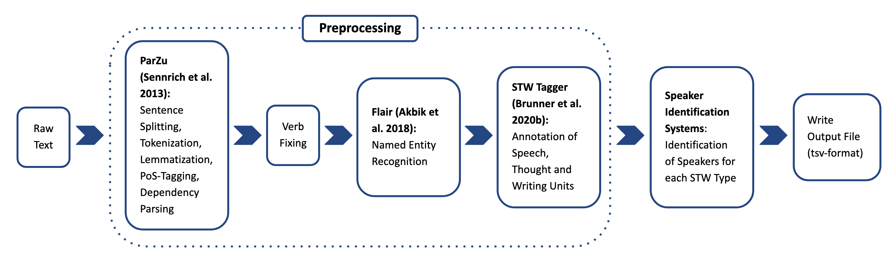

### Rule-based Speaker Identification </br> for Speech, Thought and Writing </br> in German Literary Texts <hr style="background-color:#8b2939; height: 2px;"/> </br> [Henny Sluyter-Gäthje](mailto:henny.sluyter-gaethje@uni-potsdam.de) </br> DH2022 - Tokyo | 07/28/2022 -- ## Introduction --- ### Speech, Thought, Writing (STW) * Medium of the expression of a character's voice * Different types of representation * Differ in terms of truthfulness to the 'original' utterance --- ## Direct <span class="fragment highlight-green" data-fragment-index="1">»Man fragt die Leute nicht,«</span> <span class="fragment highlight-red" data-fragment-index="2">sagte</span><span class="fragment highlight-blue" data-fragment-index="3"> der Arge</span>.<a href="#9"><sup>1</sup></a></br> <span class="fragment highlight-green" data-fragment-index="1">»You don't ask people,«</span> <span class="fragment highlight-blue" data-fragment-index="3">the eerie one</span> <span class="fragment highlight-red" data-fragment-index="2">said</span>. --- ## Indirect Jeden Tag <span class="fragment highlight-red" data-fragment-index="8">gestehst</span> <span class="fragment highlight-blue" data-fragment-index="9">du</span> mir, <span class="fragment highlight-green" data-fragment-index="7">daß du ihn liebst</span>, [...]<a href="#9"><sup>2</sup></a> Every day <span class="fragment highlight-blue" data-fragment-index="9">you</span> <span class="fragment highlight-red" data-fragment-index="8">confess</span> to me <span class="fragment highlight-green" data-fragment-index="7">that you love him</span>, [...] --- ## Reported Und während sie so in Todesängsten dasaß, klang von der Straße <span class="fragment highlight-green" data-fragment-index="6">wildes Rufen und Schreien und Jammern</span> zu ihr empor.<a href="#9"><sup>3</sup></a></br> And as she sat there in agony, <span class="fragment highlight-green" data-fragment-index="6">wild shouting and screaming and wailing</span> sounded up to her from the street. --- ## Free Indirect Dann setzte <span class="fragment highlight-blue" data-fragment-index="5">sie</span> wieder ab. <span class="fragment highlight-green" data-fragment-index="4">Ach, wie anders hatte <span class="fragment highlight-blue" data-fragment-index="5">sie</span> sich doch vorhin das Schreiben dieses Briefes vorgestellt!</span><a href="#9"><sup>4</sup></a> </br> Then <span class="fragment highlight-blue" data-fragment-index="5">she</span> set down again. <span class="fragment highlight-green" data-fragment-index="4">Oh, how differently <span class="fragment highlight-blue" data-fragment-index="5">she</span> had imagined writing this letter earlier!</span> -- ## Related Work --- ### Related Work * Speaker Attribution = Speaker Identification & Speaker Resolution * Elson & McKeown (2010): First machine learning approach * Krug et al. (2016) and Muzny et al. (2017) built rule-based systems </br> → All approaches are limited to speech </br> → No approaches for attributing reported and free indirect STW -- ## Approach --- ### Approach * Build on Krug et al. (2016) and Muzny et al. (2017) * Iterative way of compilation, evaluation and improvement of rules * [*Corpus Redewiedergabe*](https://github.com/redewiedergabe/corpus) (Brunner et al. 2020a) * Rely on: * Automatic linguistic annotation * pre-defined word lists (verb cues, animate nouns, first names, ...) --- ### Pipeline  --- ### Rules * Textual pattern: 5 * Singularity: 6 * Proximity: 4 * Conversational: 2 --- ### Rule example #### Single-Subject-Rule * If in a given context, there is only one subject * If the subject is either a: * Personal pronoun * Person (NER) * Animate noun (list) -- ## Results --- ### Comparison to related work </br> <table style="font-size: 24px;"> <tr> <td><b> Authors</b></td> <td><b>STW type</b></td> <td><b>Performance Range</b></td> <td><b>STW Medium</b></td> <td><b>Domain</b></td> <td><b>Language</b></td> </tr> <tr> <td>Pareti et al. (2013)</td> <td>Direct<br>Indirect<br>Mixed</td> <td><span style="color:#38c316">85 -91</span><br>74-79<br>65-81</td> <td>Speech</td> <td>News</td> <td>English</td> </tr> <tr> <td>Krug et al. (2016)</td> <td><Direct</td> <td>78.4</td> <td>Speech</td> <td>Literature</td> <td>German</td> <tr> <td>Muzny et al. (2017)</td> <td>Direct</td> <td>76 - 85</td> <td> Speech</td> <td>Literature</td> <td>English</td> </tr> <tr> <td>This work</td> <td>Direct<br>Indirect<br>Reported<br>Free indirect</td> <td>63.91<br><span style="color:#38c316">82.2<br>71.38<br>50.0</span></td> <td>Speech<br>Thought<br>Writing</td> <td>Literature</td> <td>German</td> </tr> </table> --- ### Errors * Pipeline Errors * Conceptual Errors: * Non-standard STW * Limitations of lists (verb cues) * Candidate position * Conversational pattern -- ## Future Work --- ### Future Work * Improve pipeline (refinement of rules, extension of word lists) * Adapt to another domain * Compare to neural network approach with semantic word representations * Extend to speaker resolution (coreference resolution) -- ## Access * [*Corpus Redewiedergabe*](https://github.com/redewiedergabe/corpus) * [STW Tagger](https://github.com/redewiedergabe/tagger) * [Speaker Identification system](https://github.com/hsluytergaethje/speaker_identification) alongside a description of the available rules. -- ## Bibliography --- ### Text examples <table cellspacing="0" cellpadding="0" style="font-size: 60%;"> <tr> <td><a href="https://github.com/redewiedergabe/corpus/blob/master/data/main/tsv/rwk_digbib_3198-1.tsv"> [1] rwk_digbib_3198-1.tsv</a></td> </tr> <tr> <td><a href="https://github.com/redewiedergabe/corpus/blob/master/data/main/tsv/rwk_digbib_3219-1.tsv">[2] rwk_digbib_3219-1.tsv</a></td> </tr> <tr> <td><a href="https://github.com/redewiedergabe/corpus/blob/master/data/main/tsv/rwk_digbib_1179-1.tsv">[3] rwk_digbib_1179-1.tsv</a></td> </tr> <tr> <td><a href="https://github.com/redewiedergabe/corpus/blob/master/data/main/tsv/rwk_digbib_1207-1.tsv">[4] rwk_digbib_1207-1.tsv</a></td> </tr> </table> --- #### References <table cellspacing="0" cellpadding="0" style="font-size: 36%;"> <tr> <td><a href="https://aclanthology.org/C18-1139.pdf">Alan Akbik, Duncan Blythe, and Roland Vollgraf. Contextual string embeddings for sequence labeling.</a> In COLING 2018, 27th International Conference on Computational Linguistics, pages 1638–1649, Santa Fe, New Mexico, USA, August 2018. Association for Computational Linguistics [last accessed on the 15th of July 2022].</td> <td><a href="https://aclanthology.org/2020.lrec-1.100.pdf">Annelen Brunner, Stefan Engelberg, Fotis Jannidis, Ngoc Duyen Tanja Tu and Lukas Weimer. Corpus REDEWIEDERGABE. </a>In Proceedings of the 12th International Conference on Language Resources and Evaluation (LREC’20), pages 803–812, Marseille, France, May 2020a. European Language Resources Association [last accessed on the 15th of July 2022].</td> </tr> <tr> <td><a href="http://ceur-ws.org/Vol-2624/paper5.pdf">Annelen Brunner, Ngoc Duyen Tanja Tu, Lukas Weimer and Fotis Jannidis. To bert or not to bert–comparing contextual embeddings in a deep learning architecture for the automatic recognition of four types of speech, thought and writing representation. </a>In Proceedings of the 16th Conference on Natural Language Processing (KONVENS 2020), Zurich, Switzerland, June 2020b [last accessed on the 15th of July 2022].</td> <td><a href="http://www.cs.columbia.edu/~delson/pubs/AAAI10-ElsonMcKeown.pdf">David Elson and Kathleen McKeown. Automatic attribution of quoted speech in literary narrative.</a> In Twenty-Fourth AAAI Conference on Artificial Intelligence, pages 1013–1019, Atlanta, Georgia, USA, July 2010. AAAI Press.[last accessed on the 15th of July 2022].</td> </tr> <tr> <td><a href="https://www.dhd2016.de/abstracts/vortr%C3%A4ge-040.html">Markus Krug, Fotis Jannidis, Isabella Reger, Luisa Macharowsky, Lukas Weimer and Frank Puppe. Attribuierung direkter Reden in deutschen Romanen des 18.-20. Jahrhunderts. Methoden zur Bestimmung des Sprechers und des Angesprochenen.</a>In DHd 2016, Modellierung - Vernetzung - Visualisierung, Die Digital Humanities als fächerübergreifendes Forschungsparadigma, Konferenzabstracts, pages 124–130, Leipzig, Germany, March 2016 [last accessed on the 15th of July 2022].</td> <td><a href="https://aclanthology.org/E17-1044.pdf">Felix Muzny, Michael Fang, Angel Chang, and Dan Jurafsky. A two-stage sieve approach for quote attribution.</a> In Proceedings of the 15th Conference of the European Chapter of the Association for Computational Linguistics (Volume 1: Long Papers), pages 460–470, Valencia, Spain, April 2017. Association for Computational Linguistics [last accessed on the 15th of July 2022].</td> </tr> <tr> <td><a href="https://aclanthology.org/R13-1079.pdf">Rico Sennrich, Martin Volk, and Gerold Schneider. Exploiting synergies between open resources for german dependency parsing, pos-tagging, and morphological analysis</a> In Proceedings of the International Conference Recent Advances in Natural Language Processing RANLP 2013, pages 601–609, Hissar, Bulgaria, September 2013. INCOMA Ltd. Shoumen, Bulgaria [last accessed on the 15th of July 2022].</td> </tr> </table>